| 日付 | 2020年1月18日（土） - 2020年1月19日（日） |
|---|---|
| メンバー | 家族（妻、長女・8歳、長男・6歳） |
| アクセス | 車 |
2日目
夜中も雪が降っていたようで、外は相当冷え込んでいる。
窓から巨大なつららをゲットする。

外は一面銀世界。
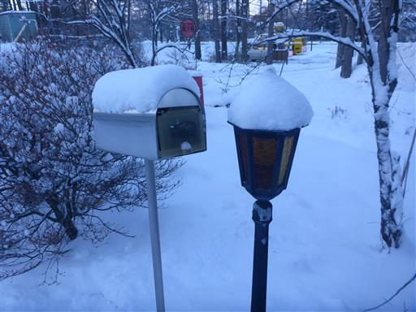
今日はきれいに晴れ渡っている。展望が期待できそうだ。
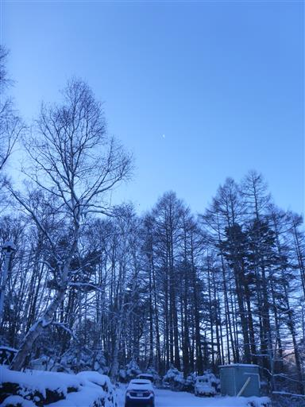
宿を後にし、車山高原スキー場に移動する。
このスキー場はとにかく巨大で駐車場がいくつもある。
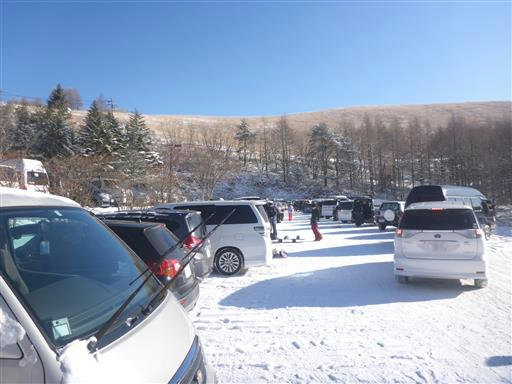
スキー場まで歩いて5～10分程度の距離があるため、シャトルバスが運行している。
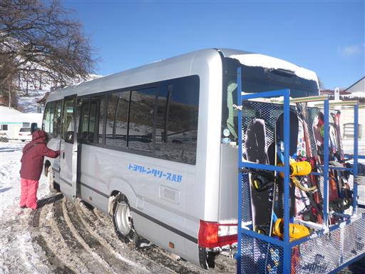
スキー場に到着。個人客の他に団体客も多い。
外国語も聞こえてくる。
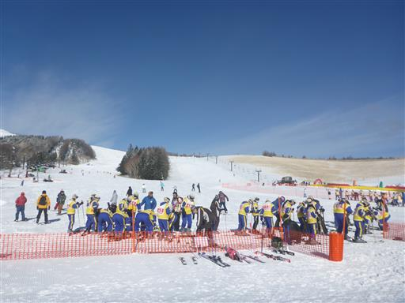
本日は子供をスキーレッスンに入れる。
だいぶ滑れるようにはなったが、もっと上達して欲しい。
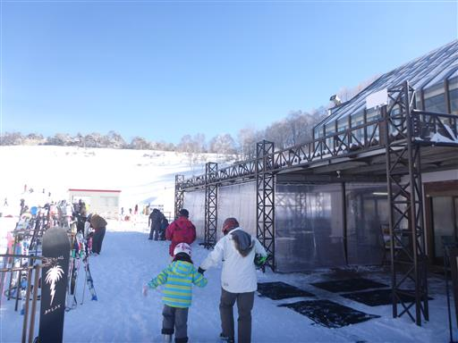
子供を預けたらスキー開始。
リフトからは目の前に聳える蓼科山が良く見える。
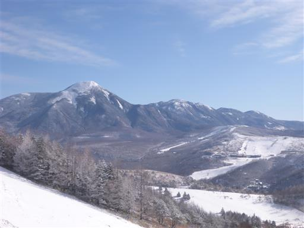
一面銀世界。今年は雪が少なく地面が見えている部分もあるが
それでも青空の下の雪山の景色は美しい。
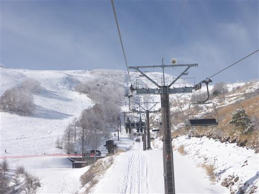
木々も真っ白に染まっている。
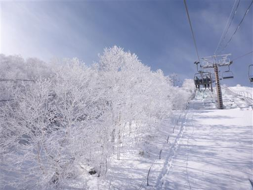
リフトを降りたところからは大展望が広がる。
甲府盆地の背後に南アルプスが聳えている。
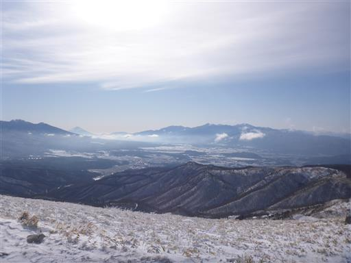
富士山も良く見えている。
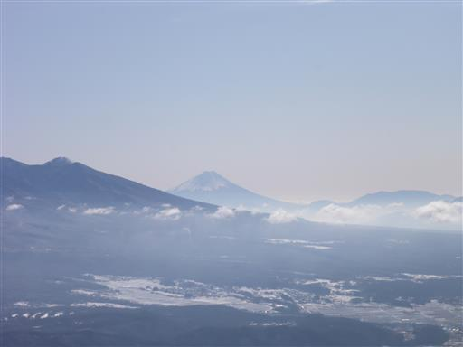
何本か滑った後、さらなる展望を求めて車山山頂まで登ってみることにする。
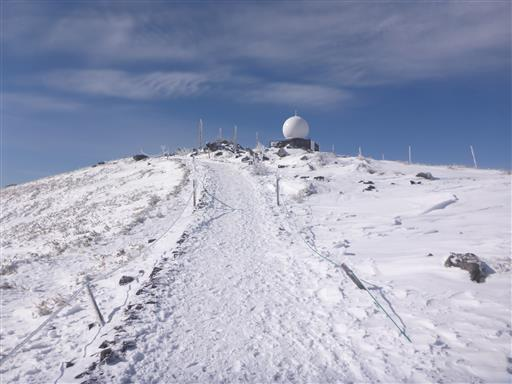
山頂に到着。リフトからすぐだ。山頂には登山客も何人か訪れている。
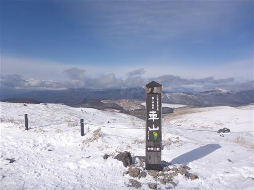
山頂からの展望。八ヶ岳はスキー場からもここからも良く見えている。
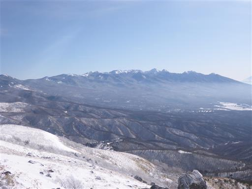
中央アルプス。
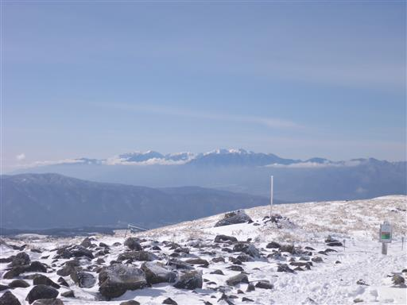
浅間山。
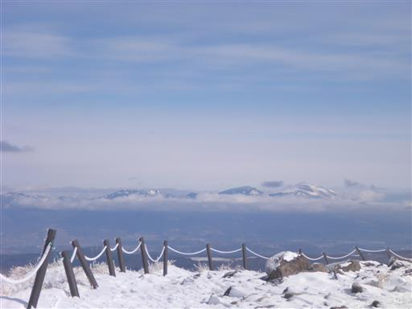
そして乗鞍岳。
残念ながら北アルプスの主峰はほとんど雲に隠れていたが、
360度どこを見渡しても素晴らしい景色だ。
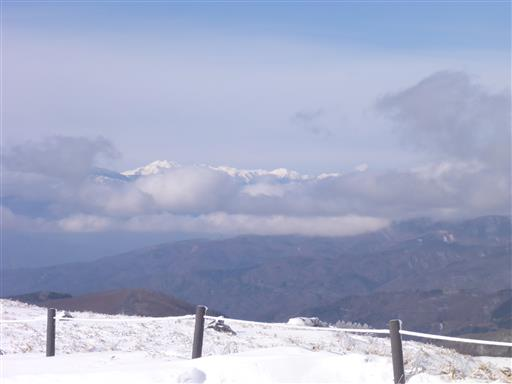
山頂に建つ神社の鳥居。風雪に耐えて建っている。
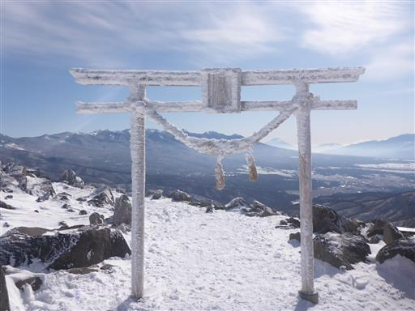
スキー再開。レッスンを受ける娘を発見。頑張って練習している。
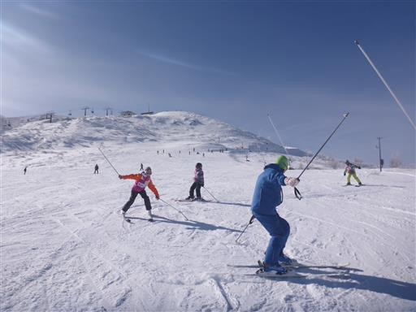
午後は家族で一緒に滑る。
広い斜面は滑りやすいが、狭いところも多く、それなりに混雑もしているため
なかなか思い通りには滑れなかった。
娘がコースアウトして斜面を落ちるなどトラブルもあったが、今年も楽しくスキーができた。
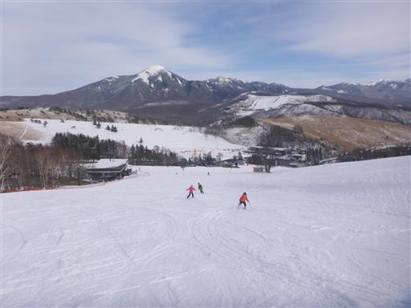